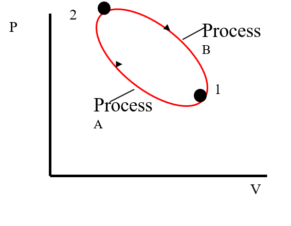

Thermodynamic Properties
Any characteristic of a system in equilibrium is called a property. Some familiar properties are pressure P, temperature T, volume V, and mass m.
Properties are considered to be either intensive or extensive.
Extensive properties - vary directly with the size of the system.
Examples: volume, mass, total energy
Intensive properties - are independent of the size (mass) of the system
Examples: temperature, pressure, color
Extensive properties per unit mass are intensive properties.
specific volume v = Volume/Mass = V/m
density r = Mass/Volume = m/V
Ideal Gas
From experimental observations it has been established that an ideal gas (to a good
approximation) behaves according to the simple equation
pV = mRT……………. (i)
where p→ Pressure
V→ Volume
T→ Temperature of gas
m→ mass
R→ Gas constant
But v = V/m……………. (ii)
Substituting (ii) in (i)
Then, pv= RT………………… (iii)
In reality there is no gas which can be qualified as an ideal or perfect gas. However, all gases
tend to ideal or perfect gas behaviour at all temperatures as their pressure approaches zero
pressure.
With the help of pV = mRT, temperatures can be measured or compared.
The Steady-Flow Process
The term steady implies no change with time. The opposite of steady is unsteady, or transient. The term uniform, however, implies no change with location over a specified region. These meanings are consistent with their everyday use.
A large number of engineering devices operate for long periods of time under the same conditions, and they are classified as steady-flow devices.
Processes involving such devices can be represented reasonably well by a somewhat idealized process, called the steady-flow process, which can be defined as a process during which a fluid flows through a control volume steadily.
Steady-flow conditions can be closely approximated by devices that are intended for continuous operation such as turbines, pumps, boilers, condensers, and heat exchangers or power plants or refrigeration systems
State Postulate and Cycles
State Postulate
The thermodynamic state of a simple compressible substance is completely specified by two independent intensive properties.
Cycles
A process (or a series of connected processes) with identical end states

Total Energy of a System
Sum of all forms of energy (i.e., thermal, mechanical, kinetic, potential, electrical, magnetic, chemical, and nuclear) that can exist in a system
For systems we typically deal with in this course, sum of internal, kinetic, and potential energies
E = U + KE + PE
where
E = Total energy of system
U = internal energy
KE = kinetic energy = mV2/2
PE = potential energy = mgz
NON-FLOW OR CLOSED SYSTEM WORK FOR VARIOUS PROCESSES
1) Constant volume or Isochoric or Isometric proces

V=C,
But V1=V2=V
→ W = ∫PdV=0
Hence, Constant Volume closed system work = Zero (0)
2) Constant pressure process (isobaric or isopiestic process)

At equilibrium,
Patmosphere+ Pp =Pgas ……… (i)
But Pp=W/A
From (i) and (ii)
Patmosphere+ Pp =Pgas
But if Patmosphere,W & A are constants, then Pgas=constant

3) Constant Temperature (Isothermal Process)
At constant temperature,
T= Constant
PV = mRT, PV = C & P1V1=P2V2=C………… (i)
Therefore,
PV = mRT = C………………. (ii)
From (i)
P= C/V………………. (iii)

4) Adiabatic Process;
A process is said to adiabatic process in which there is no heat transfer from the system or to
the system.


5) Polytropic process
A process is said to be a Polytropic process, if pressure and volume follow the relation PVn=C
Where n →polytropic index
Generally, n>1
In Polytropic process, there is both heat transfer and work transfer, but in adiabatic
process, there is only work transfer.

a. For constant pressure process
P=C
But PVk = C
When k=0,
Then
PV0 = C but V0=1
Px1=C
Therefore, P=C
b. For constant Volume process
V=C
But PVk = C
(PVk)1/k=C1/k
Then P0.V=C but P0=1
V=C
c. For thermal constant process
T=C
PV=mRT=C
PV1 =C
Where K=1
d. For adiabatic process

e. For Polytropic process
PVn=C
K=n

Ideal gas Equations for Various Processes
I. Constant volume process
Volume, V= Constant, C

Increase in pressure increases heat supply and decrease in pressure increases heat rejection
Then PV= mRT
But V→ constant, C.
m→ constant, C.
R→ constant, C.

II. Constant Pressure Process

Pressure, P = Constant, C
From, PV= mRT
But P→ constant, C.
m→ constant, C.
R→ constant, C.

III. Isothermal process
Temperature, T= Constant, C
From, PV= mRT
But m→ constant, C.
R→ constant, C.
T→ constant, C.
Then,
PV= C
Therefore,
P1V1=P2V2
IV. Adiabatic Process


V. Polytropic process

Heat (denoted by the symbol Q)

Sign convention of heat transfer
If the heat flows into a system from the surroundings, the quantity is said to be positive.
Heat received by the system = + Q
If heat flows from the system to the surroundings it is said to be negative.
Heat rejected or given up by the system = – Q.
COMPARISON OF WORK AND HEAT
Similarities
- Both are path functions and inexact differentials.
- Both are boundary phenomenon i.e., both are recognized at the boundaries of the system
as they cross them.
- Both are associated with a process, not a state. Unlike properties, work or heat has no
meaning at a state.
- Systems possess energy, but not work or heat.
Differences
- In heat transfer temperature difference is required.
- In a stable system there cannot be work transfer, however, there is no restriction for the
transfer of heat.
- The sole effect external to the system could be reduced to rise of a weight but in the case
of a heat transfer other effects are also observed.
REVERSIBLE WORK


Example
A cylinder contains 1 kg of a certain fluid at an initial pressure of 20 bar. The fluid is allowed to
expand reversibly behind a piston according to a law pV2 = constant until the volume is doubled.
The fluid is then cooled reversibly at constant pressure until the piston regains its original
position, heat is then supplied reversibly with the piston firmly locked in position until the
pressure rises to the original value of 20 bar. Calculate the net work done by the fluid, for an
initial volume of 0.05m3
Solution


Specific Heat and Latent Heat


The latent heat is the amount of heat transfer required to cause a phase change in unit mass of a
substance at constant pressure and temperature. There are three phases in which matter can exist:
solid. Liquid and vapour or gas.
The latent heat of fusion (lf) is the amount of heat transferred to melt unit mass of solid into
liquid. or to freeze unit mass of liquid to solid.
The latent heat of vaporization (lv) is the quantity of heat required to vaporize unit mass of
liquid
Into vapour, or condense unit mass of vapour into liquid.
The late11t heat of sublimation (ls) is the amount of heat transferred to convert unit mass of
solid to vapour or vice versa.
is not much affected by pressure, whereas is highly sensitive to pressure
POINTS TO REMEMBER REGARDING HEAT TRANSFER AND WORK TRANSFER
- Heat transfer and work transfer are the energy interactions. A closed system and its
surroundings can interact in, two ways: by heat transfer and by work transfer.
Thermodynamics studies how these interactions bring about property changes in a
system.
- The same effect in a closed system can be brought about either by heat transfer or by
work transfer. Whether heat transfer or work transfer has taken place depends on what
constitutes the system.
- Both heat transfer and work transfer are boundary phenomena. Both are observed at the
boundaries of the system, and both represent energy crossing the boundaries of the
system.
- It is wrong to say 'total heat' or 'heal content' of a closed system, because heat or work is
not a property of the system. Heat, like work cannot be stored by the system. Both heat
and work are the energy in transit.
- Heat transfer is the energy interaction due to temperature difference only. All other
energy interactions may he termed as work transfer
- Both heat and work are path functions and inexact differentials. The magnitude of heat
transfer or work transfer depends upon the path the system follows during the change of
state
NEXT PAGE